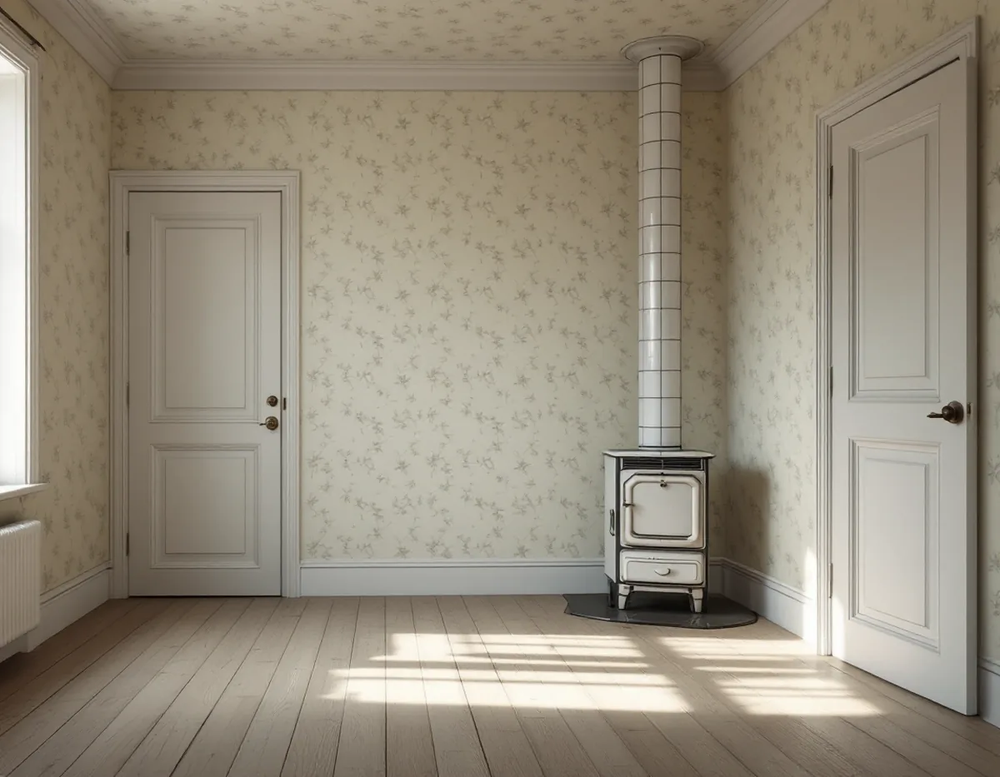
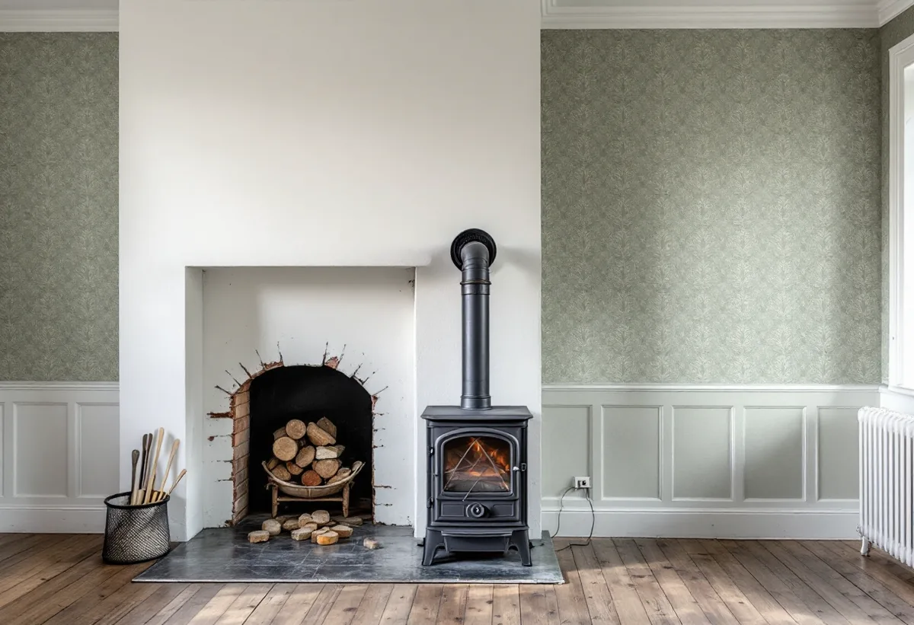

Platsbesök
Vi tittar på eldstaden, murstocken och väggarna runt dem.

I en äldre stuga eller villa i Tyresö kan rummet ha en öppen spis, en kamin eller en kökspis med kupa.
Beskriv jobbet kort.
Något blev fel. Kontrollera uppgifterna eller ring 08 12 410 276.
Vi tittar på jobbet på plats innan du får offert.
Du ser vad som ingår och vad det kostar.
Vi drar av ROT direkt och sköter ansökan.
Geal Entreprenad AB, Bromma. Org.nr 559303-7566.

Väggen intill eldstaden kräver mer eftertanke än resten av rummet när tapeten ska bytas. Geal Entreprenad AB tapetserar i villor, fritidshus och lägenheter i Tyresö och planerar väggen runt eldstaden först.
Stockholms läns museum beskriver i ett kulturmiljöunderlag för Solberga och en del av Raksta hur Tyresögodset dominerade bygden fram till 1930-talet. Efter Claes Lagergrens död 1930 började godsets marker exploateras. Slottet och en bit mark donerades till Nordiska museet, och ett bolag bildades för att sälja tomter till fritidshus. Vid slutet av 1950-talet hade nästan hälften av det gamla godset exploaterats för fritidshus, och för Solberga fastställdes en byggnadsplan 1952.
Underlaget beskriver också Strömstugan vid Follbrinksströmmen, en timmerstuga som sannolikt varit bostad åt arbetare vid industrin där. I köket finns en spis med kupa och bakugn, med en insatt järnspis från 1895, och i rummet en öppen spis med jugendform från 1900–1910-talet. Museet konstaterar att interiören har ändrats och förlorat en del av sitt värde, men att den äldre planlösningen med kökspiskomplex och öppen spis bidrar till stugans kulturhistoriska värde, och att de äldre dörrarna och spisarna är hantverksmässigt utförda i hög kvalitet.
I Tyresö sköter Södertörns brandförsvarsförbund sotning och brandskyddskontroll åt kommunen, och sotningsdistriktet skickar brev eller kort när det är dags. Förbundet påpekar att en av de vanligaste orsakerna till bränder i bostäder har med eldstäder och skorstenar att göra.
Byggnadsvårdsföreningen har fått flera frågor om väggen kring eldstaden. I ett 1700-talshus hade sotaren rått ägarna att täcka de brännbara timmerytorna bredvid kakelugnen med skivor och att ta bort tapeten över putsen bakom den. Föreningens svar bedömer att kakelugnen och murverket i murstocken normalt är tillräckligt brandisolerade genom sin konstruktion och att även tapeter troligen hade gått att ha på ytorna, men föreslår silikatfärg på skivorna. Det är en bedömning av ett enskilt fall, inte en regel.
I ett hus från 1919, där en äldre gjutjärnskamin skulle installeras, murstocken målas och resten av rummet tapetseras, var rådet att kontakta sotaren, som också ska ge tillstånd att elda när installationen är klar. En putsad sockel bakom kaminen nämns som en elegant lösning. Står det en eldstad i rummet utgår vi därför från sotarens besked om väggen närmast den och tapetserar resten.
Ska en murstock putsas om behöver tapeten först bort, och gärna även klistret, så att underlaget suger och den nya putsen fäster. Det skriver föreningen i ett svar om ett hus från 1923, där murstocken legat dold bakom skivor. Puts som lossnar när man borstar med en grov borste ska ner.
I ett annat svar påpekar föreningen att man av brandskyddsskäl inte ska borra i murstockar. Vill man bygga en vägg intill kan man i stället fästa en regel i golv och tak bredvid den putsade skorstenen och bygga väggen utifrån den. Vi tar därför ner tapeten på murstocken först när du har bestämt hur den ska behandlas, och tapetserar resten av rummet när putsen är klar och torr.
Föreningens artikel om underlag för tapetsering, skriven år 2000, säger att tapeter på timmer, lerklining, brädspont och liknande helst lagas och retuscheras av en konservator, och att länsmuseet eller Nordiska museet kan ge råd. Artikeln framhåller att Nordiska museets konservatorer har gjort små underverk med gamla tapeter, då senast på Tyresö slott.
Hittar vi äldre tapeter bakom senare skivor i en stuga får du veta det innan något rivs, så att du kan välja att spara en bit. Ska huset även målas utvändigt finns mer under målare i Tyresö.
Vi tittar på eldstaden, murstocken och väggarna runt dem.
Väggen närmast eldstaden planeras efter det sotaren har sagt.
Murstocken och övriga väggar står som egna poster.
Tapet och klister tas bort där murstocken ska putsas eller målas.
Resten av rummet tapetseras när putsen har torkat.
Vi går igenom rummet och lämnar överbliven tapet.
Tapetsering ger rotavdrag enligt Skatteverket när arbetet görs i en bostad du äger och använder, oavsett om det är permanentbostad eller fritidshus. I en bostadsrätt gäller avdraget arbete innanför lägenhetens tak, väggar och golv som du ansvarar för enligt stadgarna.
Avdraget är högst 30 procent av arbetskostnaden och högst 50 000 kr per person och år, inom 75 000 kr för rot och rut sammanlagt. Geal drar av det direkt på fakturan. Material ingår inte i underlaget.
Om murstocken ska frigöras, hur många lager som sitter på väggarna och hur rummet är format påverkar mest. Efter ett gratis platsbesök får du ett skriftligt kostnadsförslag.
Fasad, fönster och invändig målning.
Målare i Stockholm →Takbyte, takbesiktning och plåtarbeten.
Takläggare i Tyresö →Solberga, Raksta och Brevik.
Takrenovering i Tyresö →VA-anslutning, vattenmätare och dagvatten.
Attefallshus i Tyresö →LTA-avlopp, källarbadrum och golvbrunn.
Badrumsrenovering i Tyresö →Startbesked, utstakning och slutbesked.
Byggföretag i Tyresö →Fritidshus som blivit helårshus på Brevikshalvön.
Fasadmålning i Tyresö →Timmerhus, fritidshus och villor i Tyresö.
Fasadrenovering i Tyresö →Gamla bågar och beslag i Tyresö.
Fönsterbyte i Tyresö →Fritidshus som blivit permanentbostäder.
Fönsterrenovering i Tyresö →Fritidshus som byggts om till villor.
Golvläggare i Tyresö →Slipa och spara gamla brädgolv.
Golvslipning i Tyresö →Stugor som blir helårshus.
Köksrenovering i Tyresö →Stuprör, rännor och beslag i Tyresö.
Plåtslagare i Tyresö →Nytt tak med säker väg till skorstenen.
Takbyte i Tyresö →Rödfärgade hus, stugor och interiörer i Tyresö.
Målare i Tyresö →Stugor, altaner och tillbyggnader.
Snickare i Tyresö →Byggrätten i omvandlingsområdena.
Tillbyggnad i Tyresö →Rivningsavfallet, arkivet och eldstaden.
Totalrenovering i Tyresö →Eller ring 08 12 410 276, mån–fre 08–17.
Beskriv jobbet kort.
Något blev fel. Kontrollera uppgifterna eller ring 08 12 410 276.